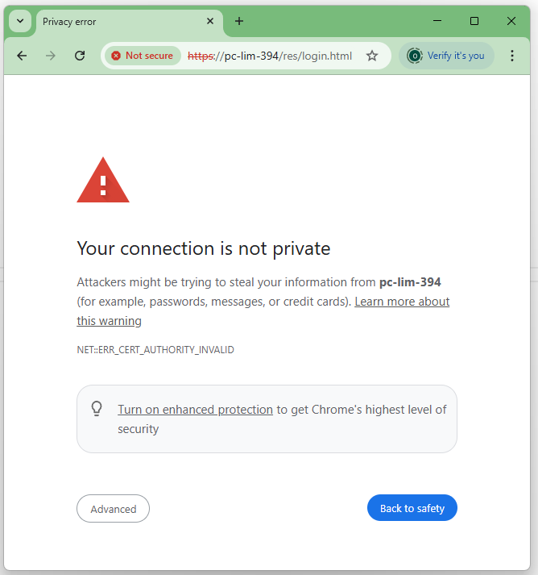
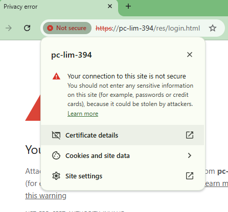
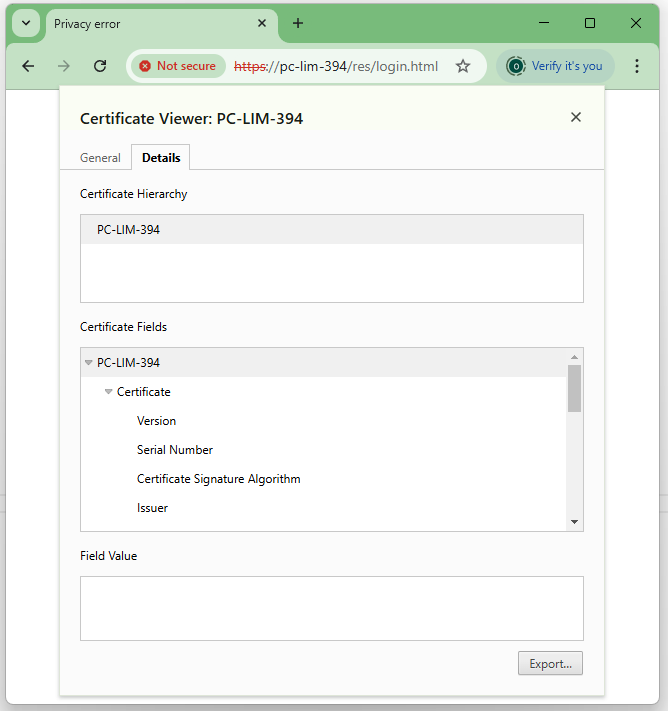
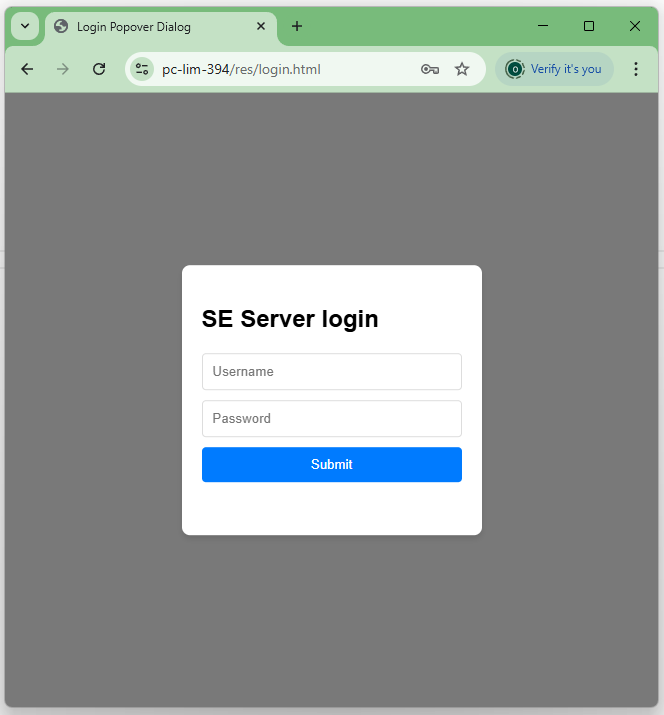

After navigating to the server address (here https://pc-lim-394/) the following warning appears
Click on the red "Not secure" button in the address bar and select "Certificate details".
Go to "Details" tab and click the "Export" button at the bottom of the page.
Save the certificate in some temporary folder (e.g. Downloads).
Open Run (Win + R) and type.
certmgr.msc
Certificate manager will appear.

Right-click on "Certificates" under "Trusted Root Certification Authorities" and in the context menu select "All Tasks" then "Import..." In the import wizard select the certificate file you saved at step 1 and keep default values in all steps. Finally click "Ok" to acknowledge the import of the certificate. Close the manager.
For Chromio based browsers (Chrome, Edge, ...) this is all.
Restart the browser for the imported certificate to take effect.
TBD...
© 2025 Laboratory imaging s.r.o.